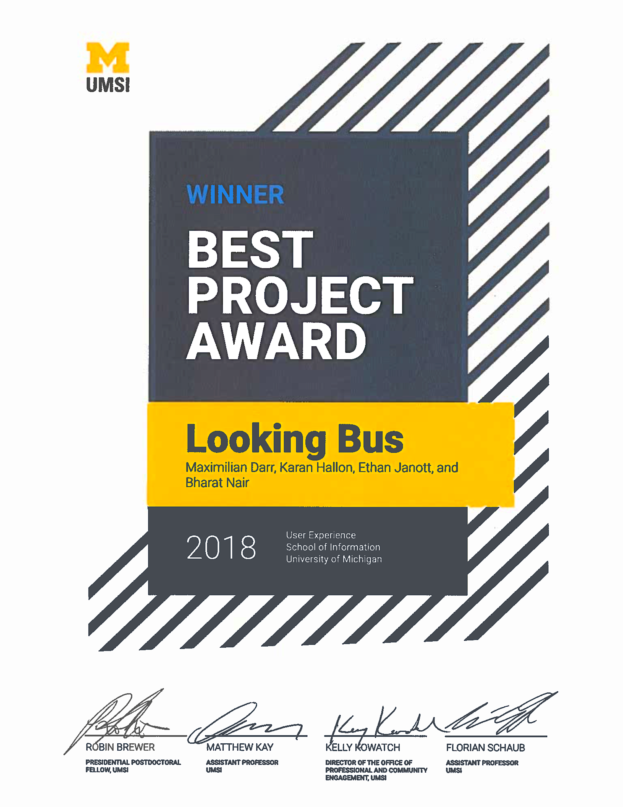
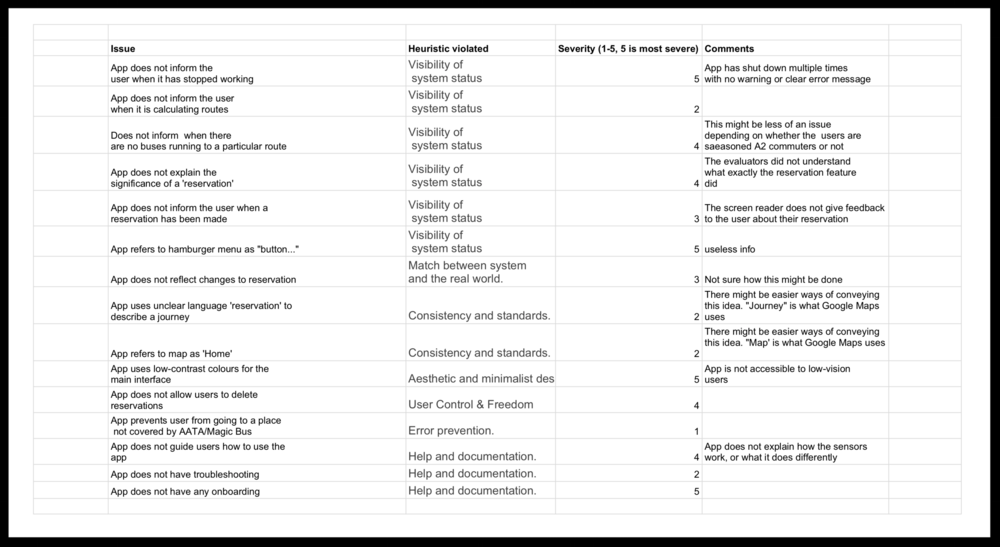

LookingBus App Evaluation & Redesign
January, 2018 - May, 2018
Shortly before graduting from UMich, I worked with small Ann Arbor startup called LookingBus to redesign the UX of their mobile app.
LookingBus' goal is to make public transportation more accessible to blind and visually impaired (BVI) users via their mobile app and propietary IOT technology.
My colleagues and I submitted our work from this project to be judged in the 2018 School of Information Expo. The Univeristy of Michigan granted our team The Diversity, Equity, and Inclusion Award, and The Univeristy of Michigan School of Information Best UX Project Award 2018.


Overview
- For this this project, I personally conducted heuristic evaluations, competitive analyses, user research, market research, user interviews, wireframing, digital prototyping, and usability testing.
- Our end product was a simple, creatively-designed, screen reader friendly, hi-fi digital prototype with a set of thoroughly-considered visual and interaction design systems.
- The final prototype design was created using Figma, and implemented for validation using HTML.
The Design Problem
Most apps aren't designed for Blind and Visually-Impaired Users. They do not account for the unique set of a BVI user's visual limitations, behavior patterns, physical tendencies, mental models, information hierarchies, and screen reader usage. Thus, we strongly considered the BVI experience and perspective in designing the LookingBus User Experience. Every single element — from app navigation to route search, from ride booking and in-route information — was highly optimized for screen readers and the BVI User.
UX Research
Our research included user interviews, literature review, heurestic evaluations, and competitive analysis.
Heuristic Evaluation
For our heuristic evaluation, we had multiple sessions using screen readers with Android, the then-version of the LookingBus app, and various other mobile apps. We also adapted certain Nielsen-Norman metrics for the context of the screen readers and the BVI user. To see the full Heuristic Evaluation matrix, click or tap the image below.

Competitive Analysis
For our competitive analysis, we looked at a variety of digital products, each with their own interesting design approach with regards to either transportation or BVI users. Some mobile apps that we considered included Google Maps, Uber, SeeingAI, BlindSquare, et cetera. To see the full competitive matrix, click or tap the image below.
Literature Review
Below are the citations for the literature that I read to gain more background on accesbility, relating specifically to BVI app development:
- Sierra, Javier Sánchez, and Joaquín Selva Roca De Togores. “Designing Mobile Apps for Visually Impaired and Blind Users.” ACHI 2012 : The Fifth International Conference on Advances in Computer-Human Interactions, 2012.
- Inc., Apple. “IOS Accessibility - WWDC 2015 - Videos.” Apple Developer, 2015, developer.apple.com/videos/play/wwdc2015/201/.
- Alphabet. “Accessibility - Usability.” Material Design — Accessibility, material.io/guidelines/usability/accessibility.html#.
- Alphabet. “Making Apps More Accessible.” Android Developers, 16 Oct. 2017, developer.android.com/guide/topics/ui/accessibility/apps.html
- Alphabet. “Accessibility.” Google Drive Help, Google, support.google.com/drive/topic/2650510?hl=en&ref_topic=14940.
- Uber. “Uber Help — Accessibility.” Uber Help, help.uber.com/h/fab02244-735f-4a03-9781-201644262564.
We made sure to cover native accessability feature integration into personal devices, as well as how 3rd-party developers address the issue.
Personas and User Journeys
Based on our interviews and research, we had three primary personas, each with a discrete and particular level of vision: fully blind, mostly blind, and partially blind. Each personas had their own different levels of vision and, thus, their own unique considerations. Below is the example of Joan, our persona that portrays a partially-blind woman.
Tapping any of the slides below will open Joan's full persona and user journey.

Design Requirements
From our extensive research and understanding, we created three sets of design requirements for our User Experience. They were as follows:
Must Haves:
- Clearly labelled buttons for screen readers to interpret and output to users.
- Clear system state conveyed, especially for when the system closes down.
- Clearly defined start states and end states for all actions in the app.
- A well-considered information hierarchy that takes into account how screen readers interpret UI content and information.
- Support for the user during every stage of their commute.
Should Haves:
- UI content and elements based on strong design convention.
- High-contrast text and UI elements for BVI users with some degree of vison.
- An onboarding process that is tailored to different persona types.
Nice-To-Haves:
- A highly detailed set of instructions for any ‘reservation:’ Currently, the application does not specify what a reservation is, nor what a reservation entails. Having a highly-detailed set of instructions for a each reservation ensures that mostly and fully blind personas have full knowledge of their reservation.
Sketches and Lo-fi Wireframes
With all the research and requirements in mind, my team and I set out to create the UX for the LookingBus Android App. We moved from initial rough sketchs to lo-fi wireframes created in Figma.
Sketches
Wireframes
Hi-fi Prototyping V1
At this point of the project, we moved onto creating our first version of our design prototype. Here we implemented all meaningful and intended visual elements and interactions behaviors. Given my familiarity with Figma, I was the primary creator of most of our final prototype content.
Below is prototype was created in Figma. I recommend expanding to full-screen for detailed viewing.
Hi-fi Prototyping V2
We had a very positive response to our first prototype alongwith some great feedback. However, we ran into a problem: how would we test and validate our prototype and our assumptions? In it's first version, while it considers how screen readers work and how BVI users analyze information, it was purely visual since Figma prototypes aren't compatible with a screen reader. It was a complex problem that we needed to find a solution to for testing.
I came up with the solution that we could export screens from Figma, and then, using my general HTML knowledge at the time, create clickable hot spots on the PNG images with "alt" tags (so that they would work with a screenreader). We exported the Figma screens onto an HTML file, and then we image-mapped every relevant UI element. I then hosted the pages on my site, and voilà, our UI was successfully compatible with a screen reader.
Below is a video of our prototype working with a native iPhone screen reader:
You can view and interact with our final mobile prototype here (see note blow):
LookingBus HTML Prototype
NOTE: This prototype is meant to be viewed in a mobile browser with the mobile device's screenreader turned on.
On iPhone, you can turn your screenreader on by going to Settings > General > Accessability > VoiceOver (ON). You can view the prototype without the screenreader, although you'll lack the full experience!
Visual Design Specs
Our visual design spec was thoroughly considered, and it was crafted with care and patience. I took the lead in the ideation, designing, and execution of this and the other two design documents. A bulleted list of the visual design specifications can found below.
- For the grid system, we chose an 8pt system. All icons, typeface fonts, spacing, gutters, etc. are set according to this grid system. The 8pt grid system was chosen for the sake of UI consistency
- For our screen design, we used an aspect ratio of 18:9. It was a conscious decision to not use the traditional 16:9 aspect ratio: this was done to be stay consistent with the current mobile display trend towards taller phones,, that’ve been set by the Samsung Galaxy S8 and S9, the Google Pixel 2 XL, and several other flagship Android phones
- For our typeface, we chose to use Cabin. While we had initially chosen Nunito for it being sans-serif and curved vertices, we eventually ended up with Cabin for its high readability between certain characters like lowercase “L” and uppercase “I.”
- Most text has a minimum 18pt font size. This is to aid readability. And, text font goes all the way up to 36pt for page titles.
- The only Cabin styles in use are Bold, SemiBold, and Regular, and they are used in descending order of information importance. No other styles are used in our design. We wanted to keep the design from being too nebulous, and styles such as Italics or Light are thought to negatively impact text readability.
- The main color of UI elements is a denim blue. The hex value is #1756D4. All main interactions buttons and other actionable UI elements are painted this particular shade of blue. This color was picked from the official LookingBus website. For the benefit of readability, we checked combinations of this denim blue background through the WCAG 2.0 requirements for color contrast, and we ensured it passed the WCAG AAA standards for large test (which they define as at least 14pt). Save for, of course, black and white, there are no other colors in use.
- The app uses the standard Material Design convention of a hamburger menu: it is used for navigation within the app (say, to settings, profile, help, contact, etc,). We strongly decided against bottom-panel navigation and tabbed navigation. This was done to highlight the singular main process of the app, that is to book a bus ride.
- The app, in its current state, does not make much use of the three-dot menu (“more options”) and drop-down menu convention. The innate nature of these menus is such that they allow enable further information and actions to be nested underneath a button for a cleaner UI. However, this creates a trade-off between an additional UI element and added functionality and, given the nature of how BVI users and screen readers interpret information, we chose to create a less cluttered UI. We designed the interaction flow and information layout and such to not take much use of these menu systems.
Interaction Map
One of our deliverable documents for our client was an interaction map that details two main processes within the LookingBus app: reserving a bus ride, and in-route ride details.
Tap or click the image below to view both interaction maps in full.
Interaction Design Spec
The following pages showcases a well-considered and professionally-rendered design document that details every meaningful interaction between the UI and user and screen reader.
Select any image below to open the full Interaction Design Spec document.
Final Thoughts
For me, this project was a huge successs. It was my first time fully immersing myself into a UX project where success was determined by stakeholder satisfaction rather than a grade. I challenged myself by chosing to do a project that was centered around accessability for blind and visually impaired users, something that I had zero exposure to prior to this. It was a excellent combination of complexity, analysis, creativity, and problem solving.
This is undoubtedly one of the most meaningful UX projects that I have had the pleasure of working on thus far in my career.